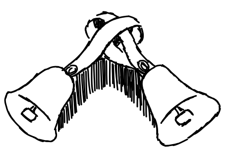

We are the Bay Area Guild of Change Ringers, founded in 2013. There are no towers in the area, but we ring handbells Thursday nights from 10pm-12pm at the Gates Computer Science Building on Stanford campus. We ring on a set of eight bells graciously loaned to us by Laura Dickerson. The regulars are Edward, Risha, Jenna and Leland.
If you are planning a visit, please do let us know by email! (In particular, you will need one of our phone numbers so we can let you into the building.) We are not too advanced (we are currently working on getting good enough to ring a quarter of Plain Bob Minor), but we would love to have your presence, beginner or advanced.